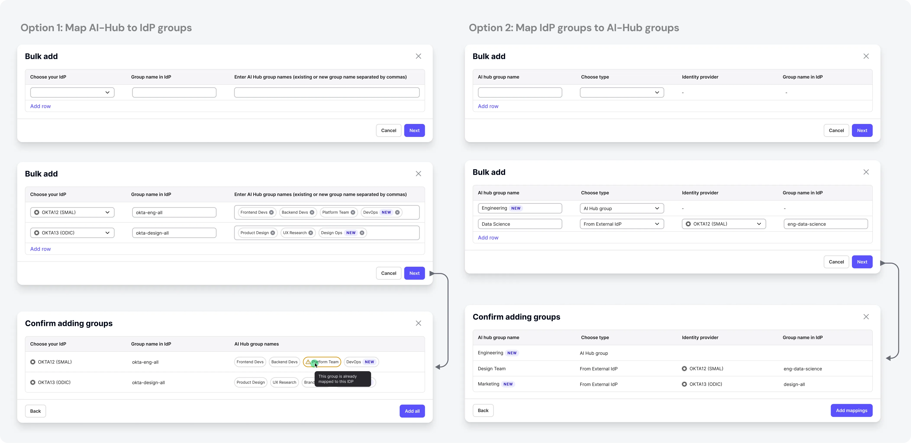

Enterprise buyers could not pass security review without SSO, IdP-driven access
control and short-lived API tokens
Deals only moved forward through workarounds
What
Self-serve SSO (SAML 2.0 + OIDC) for multi- & single-tenant
IdP group mapping driving RBAC
OAuth2-compliant tokens for API access, with scopes
Who
Org / IT admins configuring identity
Platform engineers calling APIs
Security architects signing off
Instabase presales & support
How
Three connected tracks, shipped across releases
Design decisions checked against a threat model as well as user flows
AI used end-to-end for research synthesis & spec drafting
Problem statement
Enterprise IT admins evaluating AI Hub couldn’t pass security reviews.
The platform handled sign-in like a consumer product: passwords, manual group assignment, and API
tokens with no scope and no expiry.
What I designed
SSO: SAML 2.0 + OIDCOAuth 2.0 / JWTRBACAudit logs
Working with the customer’s own identity provider
Why we built it
It started as a pattern in the support and presales channels: the same five objections, from the
largest accounts in the pipeline, over and over.
SSO was a tenancy accident
Multi-tenant customers couldn’t connect their IdP, so some were given a whole single-tenant
environment just to get SSO.
The docs promised what we didn’t have
Docs said OIDC group mapping was supported. It wasn’t, and a top-tier customer found the gap
themselves.
Long-lived opaque tokens
Banks’ security policies forbid them. They need short-lived JWTs issued and revoked by their own
IdP.
No identity for machines
In an SSO-only org, automation had nowhere to live. A shared “faceless” account can’t
complete an SSO login.
Everything needed a human
An internal engineer had to flip a per-org flag before SSO worked. Customers following the docs hit an
error and filed a ticket.
22distinct
enterprise-reported problems, catalogued across 4 Slack channels
9named
enterprise accounts blocked or working around it
How it worked before: three broken paths
I mapped each journey and marked every point where a customer had actually reported failure.
Path A
A user signs in
Email + password created inside AI Hub
The company’s IdP, MFA and offboarding rules are bypassed
Admin invites and removes every member by hand
Leavers keep a working password until someone deletes them
Path B
A user gets access
Admin creates AI Hub groups by hand
Adds each member to each group, manually
Repeats forever as people join, move and leave
Access drifts from the org chart: an audit finding waiting to happen
Path C
A system calls the API
Engineer generates a long-lived opaque token in the UI
Pastes it into a pipeline, a notebook, a shared vault
The token carries its owner’s full permissions, forever
No expiry, no rotation, no IdP revocation, no scope
Also
No audit logs
Only an internal engineer could pull audit logs
A named SOC 2 blocker in security reviews
Who I designed for
The person who configures identity is rarely the person who uses the product, and the person who
approves it never logs in at all.
Primary focus
Org / IT admin
Sets identity up, and can break it for everyone. Configures SSO in AI Hub and mirrors it
in Okta / Entra / Ping, owns group-to-role mapping, and decides when to enforce SSO org-wide.
Primary focus
Platform engineer
Runs everything that talks to AI Hub without a human. Automates through the API, needs a
non-human identity, and judges us on the first successful API call.
Influences
Security architect
Approves the purchase. Never opens the product. Can veto the deal.
Affected
End member
Feels every configuration mistake, fixes none of them.
Internal
Instabase support
Absorbs every gap the product leaves open.
Internal
Presales & Docs
Has to state our security posture, live, on a call.
No single person owns identity
Setup is split across two products
The admin enters the same values in their IdP and in AI Hub, in two vocabularies. Neither side can
check the other, which is where most setup failures came from.
The approver never logs in
The security architect is a design audience with no interface. The capability matrix and the honest
gap list were built for them.
Every gap ends at support
Invisible entitlement, silent errors and no self-serve activation all escalated back to us. That
friction loop is what this project attacked.
The solution
Three pillars, one identity story
Pillar 1 · SSO
SAML 2.0 + OIDC for multi-tenant
Self-serve configuration UI
Test before you enforce
Threat-modelled domain handling
Pillar 2 · Group mapping
IdP groups → AI Hub groups
OIDC parity with SAML
Many-to-one mapping
Showing when sync happens
Pillar 3 · OAuth tokens
Customer-IdP-issued tokens
Account mappings per identity
Scopes that only downscope
Deprecating raw internal tokens
Pillar 1 · Self-serve single sign-on
Designing for the org / IT admin
38 · IT admin at a 400-person mid-market SaaS org · Bengaluru · Configures SSO a few
times a year, not daily
Pain points
Configures SSO maybe twice in a career, so no muscle memory for SAML
Field names in AI Hub don’t match the ones in their IdP
Errors appear at login time, not at configuration time
Terrified of locking the whole organisation out
Needs
Setup in the language of Okta / Entra, not of SAML
A safe way to test before enforcing
Clear required vs optional attributes
Group membership that follows the IdP automatically
Target flow
Open Settings → Security
→
Add configuration (SAML or OIDC)
→
Paste IdP metadata / discovery URL
→
Map attributes
→
Test sign-in
→
Enforce SSO org-wide
Pillar 1 · Shipped in Release 1
Bringing SSO to multi-tenant AI Hub
Before
SSO existed only for single-tenant customers, configured by Instabase engineers through environment
variables.
What shipped
Self-serve SAML + OIDC setup for multi-tenant org admins
Multiple configurations per org, protocols mixed
Guided setup in the admin’s own IdP vocabulary
Test sign-in first; enforce SSO only once it works
Prototype coded from scratch with dummy values
Pillar 1 · Designing for the scariest moment
Test before you enforce
A wrong SSO config can lock a whole organisation out, and the
admin only finds out when a real person tries to log in.
So password sign-in stays on until a test sign-in succeeds. Enforcing SSO is a separate, deliberate step.
Without a test step: users get locked out
With it: the admin can fix and retry
Pillar 1 · Content design
Speaking every IdP’s own vocabulary
Every IdP names the same field differently.
Entra calls the ACS URL a “Reply URL”
Okta calls it “Single Sign On URL”
AD FS calls it the “Relying Party SAML 2.0 SSO service URL”
Admins were transcribing values between two tabs and guessing. I built the cross-reference for all 8
supported IdPs, and the setup UI now names each field the way the admin’s own IdP names
it.
Click to enlarge
Pillar 1 · Key decision
Removing “domain verification” from SSO entirely
ProblemThe first design routed users to an IdP by claimed
email domain. Nothing stopped an admin from claiming a domain they don’t own (even
gmail.com) and silently intercepting other people’s logins.
Options(a) Keep domains, add a manual security approval gate.
(b) Keep domains, add DNS verification. (c) Remove the domain concept and bind SSO configs directly to the
org.
DecisionOption (c). SSO configurations belong to an org;
membership is still gated by invitation, so there is nothing to hijack.
WhyAn approval gate puts a human reviewer in front of a self-serve
feature. Removing the concept removed the attack surface, along with a field, a validation
state, an error state and a support process.
Trade-off: multi-domain orgs
(separate dev / test / prod domains) aren’t served at launch. I logged it as a tracked gap.
Pillar 1 · More decisions
Designing around how SSO fails
“Test connection” instead of a separate mode
An inline test against the saved config gives the same confidence as a “test mode” without a
third “configured but not live” state to explain everywhere.
Making the destructive step feel destructive
Turning off password sign-in can lock an org out. It’s a separate, deliberate step after a
successful test, never bundled into saving, with a documented way back.
Attribute mapping designed around its failure mode
Raw errors like SAML response is missing uid attribute reached end users hours later. Now
required vs optional attributes are separated at configuration time.
Naming the danger in is_admin
If the IdP sends it, it silently overrides role changes on every login. The UI now says so plainly,
wherever the attribute appears.
Pillar 1 · Compliance
Audit logs of everything
Audit trails used to be dug out of raw log files by an internal engineer.
Admins had no way to see them.
That was a named SOC 2 blocker for several enterprise deals. A self-serve audit log view for admins
unlocked it.
All values shown are dummy placeholders
Pillar 2 · Access that follows the org chart
IdP group mapping for RBAC
SSO answers “can this person log in?”. Group mapping answers “and what should
they be able to see?”
Before
OIDC customers managed every membership by hand
Docs claimed OIDC group mapping worked; it didn’t
SAML allowed one IdP group per AI Hub group
After
OIDC at parity with SAML, same mental model
Many IdP groups can map to one AI Hub group
Sync timing stated wherever mapping is set up
Pillar 2 · Key decisions
Modelling groups the way customers think
1. Many-to-one, not one-to-one
Problem
eu-analysts, us-analysts and contractor-analysts all need the same
workspace access.
Decision
Map several IdP groups to one AI Hub group. The 1-to-1 rule was an implementation detail that had leaked
into the mental model.
2. Stating sync timing up front
Problem
Membership syncs at each member’s next login. A new mapping looks empty, and removals
aren’t instant.
Decision
Say it inline and in empty states. Launched with JIT provisioning, laying the groundwork for SCIM.
3. Keeping existing groups during the switch
Problem
What happens to current AI Hub members when a SAML or OIDC mapping is introduced?
Decision
Preserve existing groups and show each membership’s source, so admins can clean up when
they’re ready.
Pillar 2 · Iterations
Adding many groups at once
Admins map a long list of groups when they first configure an org, and adding them one at a time
is slow. The final design combines the best of each iteration.

Pillar 3 · From raw tokens to OAuth compliance
Designing for the platform engineer
29 · Backend engineer integrating AI Hub’s API into an internal platform · Remote (US)
· Ships against the API weekly
Pain points
Automation has no identity of its own in an SSO-only org
A token silently carries its creator’s full admin rights
No API to create, rotate or delete tokens
Needs
Tokens issued and revoked by their own IdP
A non-human account to map a client to
Explicit, inspectable scope on every token
A copy-paste path that works first try
Target flow
Register app in own IdP
→
Add OAuth provider in AI Hub
→
Map sub to a service account
→
Request JWT from IdP
→
Call AI Hub API as Bearer
→
Disable native tokens org-wide
Pillar 3 · Delivered in two stages
OAuth-compliant API authentication
Before
Long-lived opaque tokens, generated in the UI
Each token silently inherits its owner’s full permissions
No expiry, no rotation, no IdP-side revocation
Stage 1 · Release 2
AI Hub’s own OAuth app issues short-lived tokens (15 min)
Scopes on every token
A deprecation plan for raw tokens
Stage 2 · Release 3
The customer’s own IdP issues short-lived JWTs (15–60 min)
Signature, issuer, audience and expiry checked on every call
Scope claim downscopes to specific roles
Pillar 3 · Key decisions
Least privilege, by construction
Two objects: provider configuration and account mapping
Trusting an IdP is a one-time, org-wide job. Saying “this external subject is that account”
is continuous, so it lives on the account. “No provider” and “no mapping” became
different problems with different fixes.
Terminology as a design deliverable
“OAuth client” meant three things and reviews kept stalling. I fixed the vocabulary before the
UI: OAuth provider configuration, external OAuth client,
account mapping.
One client, one identity
Each external client maps to exactly one AI Hub user or service account. One bank couldn’t scope
tokens on their side, so the client had to become the unit of privilege.
Scope may only reduce, never grant
Scope uses immutable role UUIDs and can only downscope, so nobody can mint admin rights into a token. A
renamed role never changes what a live token can do.
Pillar 3 · Key decision
A staged migration, not a cutover
Every customer had working automation on raw
tokens. Cutting them off would break production pipelines at exactly the customers we wanted to impress.
Research3 years of Slack, Zendesk and support logs, mined into a problem list
Primary researchCustomer quotes and validation-call constraints
Competitive auditHow other document-AI and cloud vendors handle identity
BenchmarkWhat “enterprise-ready” means to a security review
PrinciplesWhat I set before drawing a single screen
One systemMapping three pillars into one information architecture
AI in my processWhere AI sped up the work, and what I kept
CollaborationEngineering, PM, presales and docs
Usability testingHow the design was validated, and what changed
Research: mining the evidence that already existed
Without direct access to enterprise IT teams, I treated 3 years of Slack presales logs, Zendesk
tickets, call notes and support threads as the research corpus.
Systematic Slack & ticket mining
I coded every reported problem by category, reporter, root cause and status, into a status dashboard.
22distinct issues
2still open
5workaround only
4docs gaps
It turned a vague “we need SSO” into a prioritised
problem list I could defend in a roadmap review.
Customer validation calls
One global investment bank’s constraints reshaped the design more than any internal opinion:
They use the client credentials flow
Their sub claim is a random string, not an email
Their security team can’t configure per-token scopes
That’s why the final model maps one external OAuth
client to exactly one identity.
In the users’ own words
I sat in on presales and support calls and interviewed internal solution engineers. These quotes
shaped the design most.
“It has been agreed internally that we will provide them ST instance despite them being a MT
customer as a temporary measure to bypass SSO requirement.”
Account team · European luxury retail group
What it told me: we were provisioning an entire environment as a substitute
for one settings screen.
“[The customer] cannot use long-lived opaque tokens due to internal security policy. Their
IdP issues the token, or they don’t integrate.”
Call notes · global investment bank
What it told me: no amount of UX makes a forbidden credential acceptable.
AI Hub had to stop being the issuer.
“[They] would not go live without a service account feature. The workaround … was
rejected, since their login is via SSO only.”
Presales · global security vendor
What it told me: we kept conflating login with API access.
Machines needed an identity that never logs in.
How other vendors solved this
I audited 9 products: 6 document-AI vendors (UiPath, Automation Anywhere, ABBYY, Hyperscience,
Rossum, Tungsten) and the 3 hyperscalers our buyers already compare us to.
SSO is table stakes
Having it doesn’t win deals, but not having it loses them at security review. A stronger
case than “customers want SSO”.
The real benchmark was the hyperscalers
AWS, Azure and GCP make machine identity native: service accounts and short-lived credentials, no
long-lived keys.
Machine identity was the bigger gap
What set competitors apart was non-human access, so the OAuth track deserved the same weight as SSO.
Self-serve setup was our opening
Several competitors still route identity setup through support. Fully self-serve, with a safe test path,
was where we could be visibly better.
Nobody picks a document-AI platform for its
SSO form. The goal was to be finished, correct and forgettable.
Benchmark: what “enterprise-ready” means
The scoring sheet the team used to decide what was in scope, what was
deferred, and which gaps we accepted.
Capability
AI Hub before
After this project
Status
SAML 2.0 SSO
Single-tenant only
Multi- and single-tenant, self-serve UI
Shipped R1
OIDC SSO
Single-tenant only
Multi- and single-tenant, discovery-URL based
Shipped R1
RBAC via IdP groups
SAML only; manual otherwise
SAML + OIDC group mapping, many-to-one
Shipped
JIT provisioning
Single-tenant only
Account auto-created on first SSO login, MT included
Scope claim with role UUIDs; scope can only reduce
Shipped R3
Audit logs
Partial
14 categories, CSV/JSON export, 2-year retention
Preview, ST only
MFA
Per-account, password logins only
Delegated to the customer’s IdP under SSO
IdP managed
SCIM offboarding
None
Not built: sync happens at next login
Named gap
The principles I set before drawing anything
Security UX is usable right up until the moment it silently isn’t. These were my filter for
every decision, at the top of every review deck.
Speak the admin’s IdP, not the spec
Every label, helper text and error uses the name the admin sees in Okta, Entra or PingFederate.
No config change is a leap of faith
Test before enforce, always. The destructive step is guarded, explained and reversible.
Show hidden state
Sync timing, gating flags and token permissions are invisible. Unseen state becomes a ticket.
Permissions only ever go down
Nothing may grant more access than the identity behind it. Scope downscopes, never upscopes.
Design for the threat, not just the flow
Every surface got a “how would a bad actor abuse this?” pass. One pass removed a feature.
The docs are part of the product
4 of the 22 problems were pure docs failures, so docs shipped with the feature, verified by its
engineer.
Mapping three pillars into one system
Without a deliberate structure, AI Hub would have ended up with three
unrelated “security” screens built by three teams.
SSO Logins
How users get in: password sign-in policy, MFA
Identity & access
SSO config, test mode, OAuth providers
Groups
Groups, group mappings and roles
Service accounts
Account mappings live on the account
Audit logs
What happened, with a detailed snapshot
The rule underneath: an object lives where the
user’s mental model puts it, not where the API happens to expose it.
How I used AI in this project
Three years of Slack, call notes and docs is a corpus no human reads end-to-end. AI made it
manageable for one designer.
Corpus mining
22 issues extracted, deduplicated and coded in a day, not a fortnight
Root-cause clustering
AI proposed clusters by cause; I decided what was a design problem
Protocol literacy
A tutor on SAML, OIDC, JWKS and JIT vs SCIM, until I could hold my own in eng reviews
Cross-IdP matrix
Drafted from provider docs; I verified every row in real IdP consoles
Adversarial review
AI as the bad actor. This pass caught the domain-claiming attack
Error & helper copy
Variants drafted with AI, cut hard, checked against the tech design docs
Specs & handoff
Field specs and state tables drafted from my flows, reviewed against the API spec
What I did not delegate
Every architectural call was mine, argued in review. AI got me informed faster
Collaboration
Engineering · 1 eng lead, 2 devs
I reviewed the API spec, SSO schema and scope matrix directly. Removing the domain field or using role
UUIDs are design decisions wearing engineering clothes. Frontend built on a mocked API, so I reviewed real
builds weeks earlier.
Product & presales
Presales and support held the objection list, so they were my highest-signal research channel. In return,
my benchmark and entitlement tables went straight to them, so “do you support X?” stopped being
answered from memory.
Documentation
I wrote the required/optional attribute tables and per-IdP setup guides, and set up a workflow where
engineering verifies doc accuracy before publishing.
Design sign-off
Every screen was walked through with its engineer against the states list: empty, gated, loading, error,
partial, destructive-confirm. For identity, those states are the product.
Usability evaluation
Tested with internal participants who mirror the personas (solution,
support and platform engineers who configure customer IdPs), plus walkthroughs with early customers.
Task
Participants
Success
Median time
What we saw
Configure SAML SSO end-to-end
4 admins
75%
6 min
Test-before-enforce reduced hesitation
Configure OIDC SSO end-to-end
5 admins
80%
4 min
Discovery URL auto-fills most fields
Map an IdP group to an AI Hub group
6 admins
83%
3 min
The sync-timing note prevented “is it broken?”
Register an OAuth provider + account mapping
4 engineers
50%
9 min
2 of 4 needed a hint to find account mapping
First successful authenticated API call
4 engineers
75%
5 min
Sample code worked first try for 3 of 4
What testing changed
I don’t know which of these fields my IdP calls what. I’m guessing.→
Field labels carry per-IdP naming, and setup shows where in each of the 8 IdPs every value lives.
So if I save this, is SSO on now? Am I about to break login for everyone?→
Saving and enforcing became two separate, clearly labelled steps, with password sign-in held open until a
test succeeds.
I created the mapping but the group is empty. Did it fail?→
Sync timing is stated at the moment of creation, in the confirmation and the empty state.
Why can’t I just paste the role name into the scope? These UUIDs are unreadable.→
Kept immutable UUIDs, but shipped a copyable role-to-UUID reference and worked scope examples.
Change based on feedback
A “verify user” tool for the RBAC switch
We have to open every group and check manually.
When orgs moved from old to new RBAC, it was hard to confirm which groups a user belonged to, so people
could be missed.
Change: search for a user inside groups and instantly see every group they’re in.
A manual, error-prone check became a debugging step.
How I defined success
Nobody wants to spend time in an SSO settings screen, so engagement is the wrong measure. I
defined success as less friction and less risk.
SSO adoption
Eligible orgs with a working SSO config
Time to first SSO login
Setup measured end to end, including inside the IdP
Auth tickets per org
Should fall even as more orgs onboard
API calls on OAuth
How much traffic left long-lived tokens
Manual group edits
Falling edits mean access follows the org chart
Orgs enforcing SSO-only
The strongest signal of trust in the config
Deals unblocked
The reason the work existed
Environments avoided
No single-tenant instance just to get SSO
Adoption and retention
In the first months after each release.
9orgs configured SAML or OIDC SSO without a support ticket
37%of enterprise API traffic now uses IdP-issued JWTs
−60%auth tickets per onboarded org, against the 22-issue baseline
−33%manual membership edits in orgs using group mapping
Impact on business
Enterprise pipeline and cost.
+9enterprise deals unblocked; auth no longer a blocker
8-figureARR influenced in security-gated deals
0workaround single-tenant environments, saving infra cost
−82%initial org setup time, from 4 weeks to 5 days
Reflections & learnings
The research already existed
Three years of support threads held a fully evidenced problem list. I needed to treat it as research.
The best security fix removed a field
Deleting domain claiming solved it completely. Security UX rewards subtraction.
I had to understand JWT validation
Designers on infrastructure have to earn technical credibility. AI helped me learn faster, but I still had
to learn it.
Listing gaps made the rest believable
Writing “we do not support SCIM” made the matrix credible. Presales stopped hedging.
Most failures came from state nobody could see
Hidden flags, sync delays, silent attribute errors. Most of my work made that state legible.
What I’d do differently
Design the entitlement and gating experience before the feature, and push for the docs-accuracy
gate from day one.
Thank you
Questions?
Lokesh Kumar V M · Senior Product Designer · lokeshdesign.com